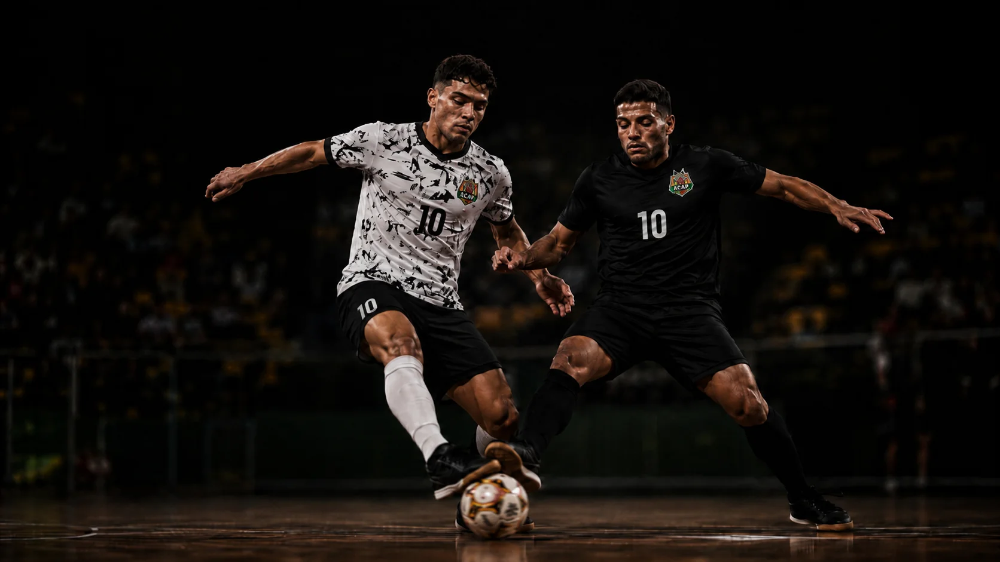

COMPETIÇÕES OFICIAIS
A ACAP disputa a Federação Paulista de Futebol de Salão com dois times — Time 1 e Time 2 — no Campeonato Paulista e na Copa União. Uma estrutura pensada pra competir em alto nível e formar atletas ao mesmo tempo.
A ACAP disputa a Federação Paulista de Futebol de Salão em duas frentes ao longo do ano.
A principal competição da Federação Paulista de Futebol de Salão — onde a ACAP já somou 16 títulos desde 1995.
Competição que amplia a temporada e dá mais jogos oficiais de alto nível pros nossos atletas.
A ACAP disputa a Federação com dois elencos — cada um com um papel diferente dentro do projeto do clube.
Reúne os atletas mais preparados do clube — o topo do processo de formação da ACAP, competindo pelo mais alto nível na Federação.
Disputa a Federação normalmente, mas também é o time de formação de alto rendimento do clube — a porta de entrada pra quem ainda está construindo o caminho.
Atletas que se destacam na Academy ou na escolinha ganham oportunidade de integrar o elenco da Federação — no Time 1 ou no Time 2, de acordo com o nível de cada um.
Nem toda jornada é igual — mas é assim que a maioria dos nossos atletas chega até lá.
Iniciação ao futsal, base motora e o gosto pelo jogo, sem pressão de resultado.
Quem se destaca é convidado para o projeto de formação Sub-9 ao Sub-16.
Atletas em evidência na Academy — ou na escolinha — ganham chance no elenco da Federação.
Disputa o Campeonato Paulista e a Copa União — inclusive quem nunca foi federado antes.
O time principal da ACAP na Federação — o mais alto nível competitivo do clube.
Atletas que se destacam na Academy ou na escolinha ganham oportunidade de integrar o Time 1 ou o Time 2, de acordo com o nível de cada um.
Não. O Time 2 disputa a Federação normalmente, mas também é a porta de entrada pra atletas que nunca foram federados.
O Time 1 é o elenco principal, com os atletas mais preparados do clube. O Time 2 também disputa a Federação, mas funciona como time de formação de alto rendimento.
A escolinha é iniciação — gosto pelo jogo e base motora, sem cobrança de resultado. A Academy é o projeto de formação para o alto rendimento (Sub-9 ao Sub-16), com processo estruturado de médio e longo prazo.
Fale com nossa equipe pelo WhatsApp e agende uma avaliação.
Fale com a nossa equipe e entenda o caminho até o Time 1 ou o Time 2.